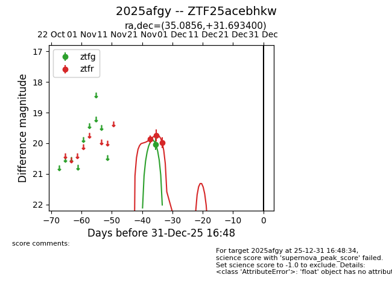
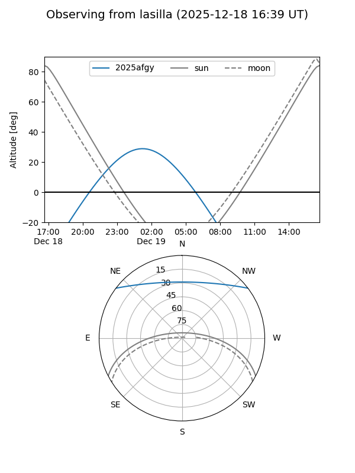
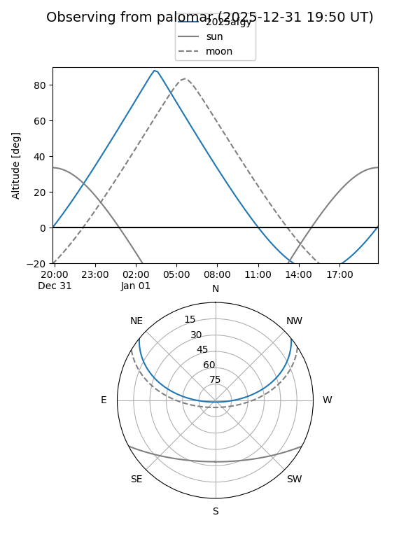
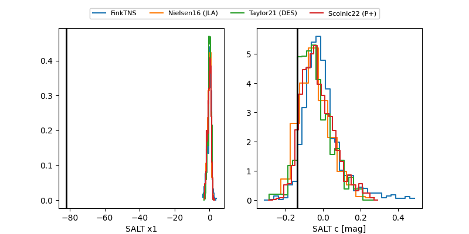

2025afgy
Target 2025afgy at 2025-12-31 17:59
Aliases and brokers:
FINK: link
Lasair: link
ALeRCE: link
TNS: link
YSE: link
alt names
ZTF25acebhkw (ztf,fink_ztf)
2025afgy (tns,yse)
Coordinates:
equatorial (ra, dec) = 35.0856,+31.69340
equatorial (HMS+DMS) = 02:20:20.55,+31:41:36.24
galactic (l, b) = (144.2033,-27.47990)
Flags:
Photometry:
last ztfg=20.04, ztfr=19.98
1 ztfg, 3 ztfr detections
Lightcurve

Visibility


Additional plots
